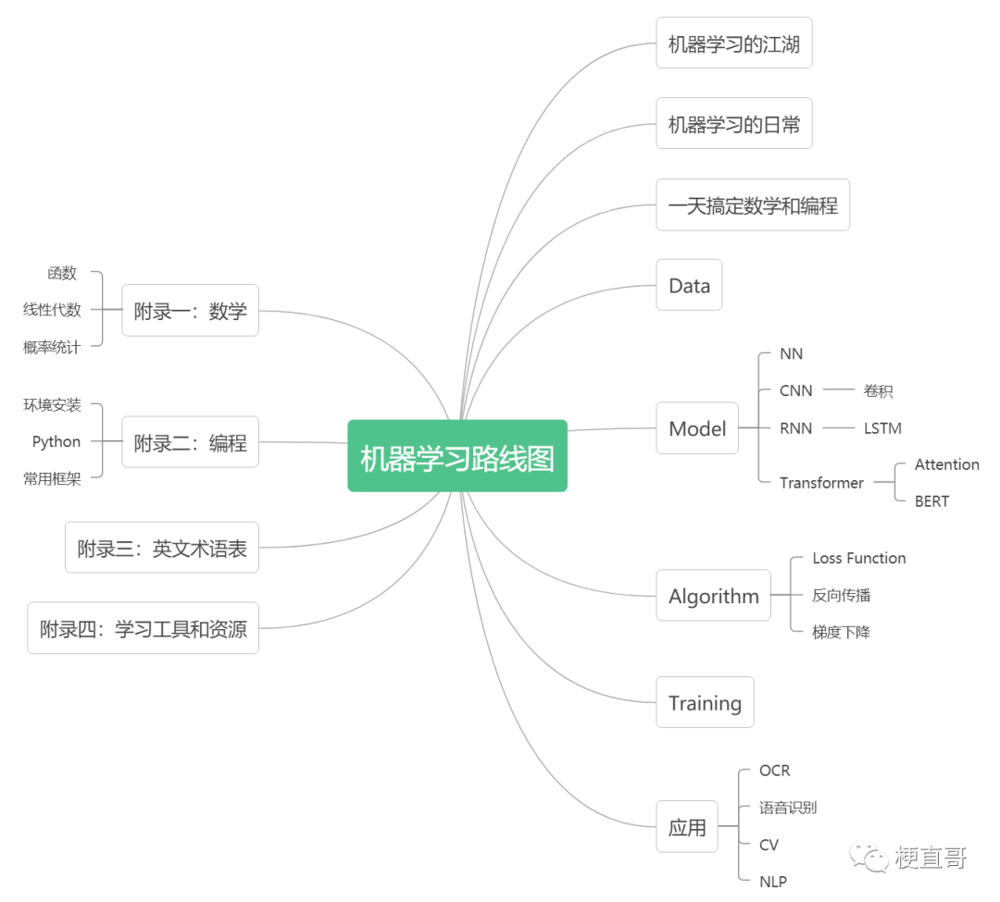

0-2 机器学习路线图¶
开启机器学习的旅程，哪个人不想少走弯路、节约时间、充分利用现成资源呢？这期就这三个问题，以过来人的视角，提供一些建议和经验，尽量让你避开常见的坑，更加高效愉悦地实现自己的目标。
如何快速上手¶
一张脑图最容易说清学习路线图，给人获得全局既视感。如下图所示：

首先，聊一聊机器学习的江湖。具体包括：这个系列在内容上的三个特点；一张梳理各类算法的族谱图；以及在内容讲解上的几点说明。其中族谱图是个小小的创新，试图用相对崭新的视角重新划分机器学习的类别。借助金庸武侠小说中的人物关系，帮助大家简单明了地记住不同算法间的异同和联系。在做到过目不忘的同时，还能受到些许启发，对未来新的算法趋势有一定的预测和思考。
其次，说一说机器学习的日常。解析神经网络训练的主要步骤，我们会用一个简单而具体的例子让你以最快速度一下子明白机器学习的训练过程，非常地容易理解和上手。
第三步是简明扼要地带你快速复习所需数学和编程知识。本着非必要不引入，引入即直白易懂两个原则，所有内容让你在一天内妥妥地弄明白，不相信你可以试试。无论是内容，还是教学方式，都已经在只具备小学水平且没啥太多编程知识的孩子身上得以验证。
接下来的重点是机器学习的四大核心内容：数据、模型、算法和训练。
数据部分。这一部分，我们会介绍一些业内流行的数据集，让你知道benchmark，也就是基准线在哪儿。同时，小结一下常见的数据预处理方法，这几乎是所有训练必须要做的步骤。另外，讲述一些数据处理技巧，比如归一化对模型效果的影响。最后再介绍一种流行的数据扩增方法—数据增强。这部分工程性比较强，但是突出实用性。
模型部分。这是重中之重，经常听到的各种模型都会在这里一一介绍。但是与传统书籍资料不同，我们刻意摒弃那种刻板严肃的教学方式，做了两种创新：一是看电影讲故事，用生活中浅显易懂的例子或者有趣的情节，让你迅速抓住其中的精髓，领悟机器学习的思想，有种“啊！懂了懂了，原来是这样啊”的感觉；二是做类比，纵向贯通讲清楚网络结构的演变历程，横向比较讲清楚不同模型间的异同，从而极大的降低理解的难度和记忆的负担，短时间内即能举一反三，明白纷繁复杂模型间的内在联系。
算法部分。我们集中讲清涉及算法选择相关的几件事：误差损失函数、反向传播和梯度下降。如果说前面模型讲的是神经网络的“形”，算法就是神经网络的“神”。它能告诉我们为啥神经网络能够实现学习的神奇效果！换言之，模型讲的是静态的神经网络，多种多样富于变化，而算法讲的是动态的神经网络怎么训练的。你会惊奇地发现，原来不同的神经网络间的训练算法如此的一致。
训练部分。着重介绍训练过程中常见的性能提升问题。如果你是初学或者仅仅想从宏观上了解机器学习的概况和思想，大可把这章先跳过去，忽略这些细节问题。当然最好的办法是快速浏览，大概知道训练过程中可能会遇到哪些问题，都是什么术语，不必深究其所以然的情况下，做到先知其然。如果你已经是个熟手，希望这一章能够帮你跳过繁琐细节的泥沼，从另外一个角度重新思考训练中的诸多细节，能够相对地梳理出一个清晰的思路。
最后，将花一部分篇幅给大家介绍一些有意思的应用和最新最前沿的算法，保姆级地教大家一步步实践，开启大家对机器学习的兴趣和更加深入的认知。
附录部分包含四部分：
一是数学知识的延伸阅读。这部分比前面概述要更加详细。一方面能自成体系，让你不用再到处找资料，相对全面地提供机器学习入门所需的数学基础知识；另一方面作为桥梁，告诉你更加深入的学习应该学什么，为啥学，大概应该怎么学，或者学到什么程度。
二是编程知识的延伸学习。包括了软件环境的详细安装说明，手把手的教你搞定；python的常见命令；以及常用机器学习开发框架的介绍。
三是英文术语对照表。无论是阅读论文，还是编程，都需要熟练掌握一定量的学术黑话。总结这个表的目的就是想帮你节省时间，能够比较快的一口气吃掉所有的学术单词。
四是学习工具和资源的小结。包含了我们所提供的知乎文章、B站视频、微信公号、互助讨论群、VIP服务群及课程介绍，以及网上优质的大量相关学习资源推荐。
多久能学会¶
拿起一本书，往往你问自己的一个灵魂拷问是“我多久能学会？”
这个问题中最难定义的是“会到什么程度”。这有点儿像是吃饭，要看你的目的到底是吃饱，还是吃好。是追求不饿，注重营养，还是讲究口感和色香味俱全。我们想帮你实现的是，面对一桌子从未吃过的螃蟹美食，不是望而生畏，心存恐惧，也不是因噎废食。
机器学习某种程度上也是门语言，和机器对话的语言。和所有语言的学习一样，入门是最难的，兴趣永远是学习的最好动力。“师傅领进门修行在个人”，最后能学到什么程度，那要看个人造化，更要看不同的目的和需要。任何时候坚持与不懈的努力都是最好的解药。

如果你时间宝贵，推荐你用三天到一周的时间浅尝辄止的概览，看看例子、故事、视频，把握模型、算法、训练和应用的区别与联系。从全局上了解这门学科涉及哪些内容，又能快速理解它的核心思想和精要之处就够了。
如果你有一个月左右的时间，也确实想比较深入地了解这门学科。希望你能从只看不试，跨越到又看又试，毕竟“纸上得来终觉浅，绝知此事要躬行”。
如果你想进入这行，希望这个系列能够成为一个良好的开端和相对美妙的回忆。以此为跳板，帮你认识更多的资源、圈子和同路人。在迷茫和焦虑中，有那么个过来人跟你说说人话，讲讲故事和心得。
学习资源¶
与此系列配套，我们在B站、知乎和微信公号开设了账号，提供大量的免费视频、文章、代码、论文供你白嫖。
B站搜索“梗直哥丶”，欢迎扫码关注。我们主要在这里发布短视频并与大家互动。
知乎账号：梗直哥。我们主要在这里发布最新的文章、学术讨论和专栏。当然你也能在这里看到相关的短视频。如果你喜欢看文章胜过视频的话，欢迎关注这个号。

微信公众号：梗直哥。你可以在这里免费下载相关的代码、数据和软件链接。我们还将提供相应的讨论群及时解答大家的问题。